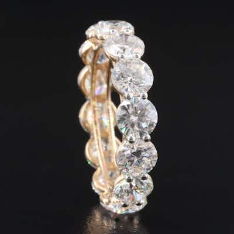

OUTPRICED14K 6.80 CTW Lab Grown Diamond Eternity Band
14K yellow gold eternity band set with round brilliant lab-grown diamonds, approx. 6.80 CT
0 min left
Current bid$625 · 31 bids
Est. value$629
Your max bid$380
All-in at max$472
Projected close$625
Margin at bid−$125
Details & price history →